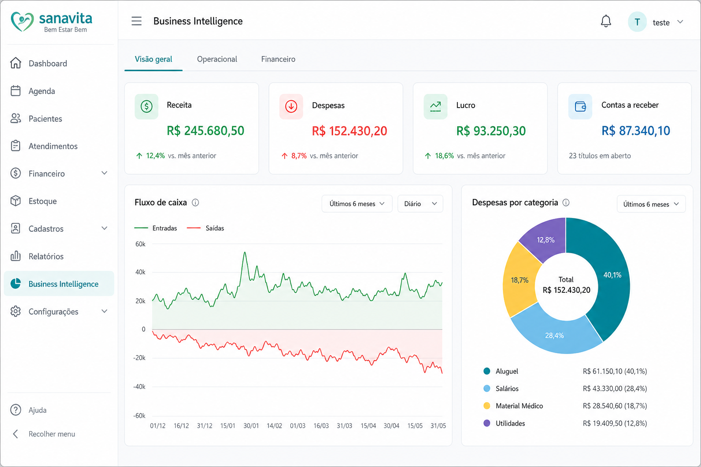
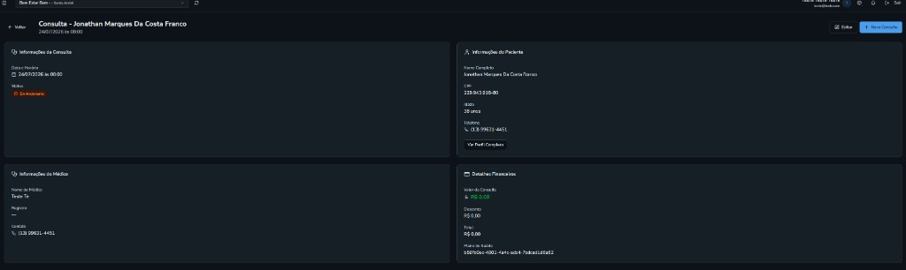

Sanavita
O sistema que organiza a clínica do agendamento aos indicadores.
Plataforma para clínicas: pacientes, agenda, prontuário, financeiro, portal do paciente e BI integrado — simples para a recepção e clara para a gestão.
- Agenda com slots de 30 minutos
- PEP, financeiro e BI com Excel/PDF
- Multi-clínica e portal do paciente


Para quem é
Feito para quem faz a clínica acontecer.
Recepção
Agenda com horários livres, paciente e plano de saúde no mesmo fluxo — sem ligar para confirmar disponibilidade.
Corpo clínico
Agenda por especialidade, valores de consulta e atendimento com visão clara do paciente.
Gestão
Clínicas, usuários, permissões, financeiro e BI no mesmo lugar — indicadores reais para decidir com segurança.
Produto em ação
Telas reais. Fluxos pensados para o dia a dia.
Conheça os principais módulos do Sanavita com capturas do sistema em uso — da agenda ao atendimento, com BI integrado para a gestão.
Módulo 01
Agenda que respeita a rotina da clínica
Horários livres do médico, bloqueio só do slot ocupado e visão clara do dia. Menos conflito, mais consultas confirmadas.
- Disponibilidade por dia da semana
- Slots a cada 30 minutos
- Ocupação pontual, sem zerar o dia
Módulo 02
Agendamento completo em poucos cliques
Paciente, plano de saúde, especialidade, médico, valor e horário — tudo no mesmo fluxo, com regras de disponibilidade.
- Plano do paciente ou particular
- Valor da especialidade automático
- Validação de horário livre
Módulo 03
Atendimento com visão 360º
Detalhes da consulta, dados do paciente, médico responsável e informações financeiras em um painel objetivo.
- Status da consulta em tempo real
- Dados clínicos e financeiros juntos
- Ações de check-in e atendimento
Módulo 04
Multi-clínica sem complicação
Gerencie unidades, especialidades, equipe e operação em um único sistema — com troca rápida de contexto.
- Troca de clínica no topo
- Busca e filtros rápidos
- Especialidades por unidade
Módulo 05
Usuários e perfis sob controle
Recepcionista, médico, gestor e proprietário com permissões claras. Segurança sem travar o dia a dia.
- Lista com status e contato
- Perfis coloridos e legíveis
- Gestão centralizada da equipe
Módulo 06
Acessos pensados para o corpo clínico
Perfis clínicos e administrativos prontos para a realidade da clínica, com vínculo por unidade.
- Proprietário, administrativo e recepção
- Perfis clínicos por especialidade
- Vínculo a uma ou mais clínicas
Módulo 07
BI integrado para decidir com dados
Business Intelligence nativo: indicadores de operação e financeiro no mesmo sistema da agenda — sem ferramenta à parte nem planilha solta.
- KPIs de receita, despesas e lucro
- Fluxo de caixa e despesas por categoria
- Relatórios exportáveis (Excel e PDF)
Módulo 08
Financeiro e faturamento no mesmo lugar
Contas a pagar e receber no dia a dia; no plano Pro, guias TISS, lotes, glosas e repasses médicos — sem planilha paralela.
- Contas a pagar e receber com categorias
- Faturamento TISS com exportação XML
- Repasses e visão para a gestão
Módulo 09
Portal do paciente
O paciente agenda, consulta documentos e acompanha o financeiro em área própria — com solicitação de acesso gerenciada pela clínica.
- Login e agenda pelo portal
- Receitas, atestados, exames e prontuários
- Solicitações de acesso aprovadas pela equipe
Ecossistema
Tudo que a clínica precisa, conectado.
A partir do Starter
Pacientes e Core
Cadastro, unidades, usuários, perfis e configurações da clínica.
A partir do Starter
Agenda e consultas
Horários livres, agendamento, check-in, atendimento e lista de espera.
A partir do Starter
Clínico / PEP
Prontuário, receitas, atestados, exames, laudos e corpo clínico.
A partir do Starter
Financeiro básico
Contas a pagar/receber, categorias e visão financeira do dia a dia.
A partir do Pro
Faturamento TISS
Guias, lotes, glosas e exportação/importação de XML TISS.
A partir do Pro
Portal do paciente
App do paciente: agendar, consultas, documentos e financeiro.
A partir do Pro
Estoque e compras
Medicamentos, inventário, compras e fornecedores.
A partir do Pro
BI e LGPD
Indicadores com exportação Excel/PDF e ferramentas de privacidade.
Como funciona
Simples de implantar. Fácil de usar no dia a dia.
Em poucos passos a clínica deixa planilhas e anotações de lado. O Sanavita acompanha o fluxo real: cadastrar, agendar, atender e acompanhar resultados no BI — com telas claras para recepção, médicos e gestão.
1
Começo organizado
2
Horários que fazem sentido
3
Recepção sem fricção
4
Do check-in ao financeiro
5
Controle sem burocracia
6
Dados que orientam a gestão
-
Começo organizado
Prepare a clínica e a equipe
Cadastre a unidade, especialidades e profissionais. Defina quem é recepcionista, médico ou gestor — cada pessoa entra com o acesso certo, sem complicação.
- Uma ou várias clínicas no mesmo sistema
- Perfis prontos: recepção, clínico e administração
- Especialidades e valores vinculados à operação
Dica amigável: comece por uma unidade e um turno. Em poucos dias a equipe já opera com segurança.
Lista de clínicas no Sanavita -
Horários que fazem sentido
Configure a agenda dos médicos
Informe os dias e períodos em que cada profissional atende. Na hora de marcar, o Sanavita mostra só os horários livres — um horário ocupado não bloqueia o restante do dia.
- Agenda por médico e especialidade
- Slots a cada 30 minutos
- Menos conflito e menos ligação “só para confirmar”
Dica amigável: cadastre a rotina real (ex.: seg/qua/sex 8h–17h). O sistema faz o resto.
Agenda diária no Sanavita -
Recepção sem fricção
Agende a consulta em um fluxo só
Escolha o paciente, o plano (ou particular), a especialidade, o médico, a data e o horário. O valor da consulta pode vir automaticamente da especialidade — tudo na mesma tela.
- Paciente e plano de saúde no mesmo cadastro
- Só horários disponíveis aparecem
- Valor e desconto com máscara monetária
Dica amigável: em poucos cliques a consulta está marcada e a equipe segue para o próximo atendimento.
Tela de agendar nova consulta -
Do check-in ao financeiro
Atenda com visão completa do paciente
No atendimento, a equipe vê status da consulta, dados do paciente, médico responsável e detalhes financeiros. Check-in, início e conclusão ficam registrados no mesmo painel.
- Status claros: agendada, em andamento, concluída…
- Dados do paciente e do médico na mesma tela
- Valores e plano de saúde à vista
Dica amigável: menos troca de sistema, mais tempo para cuidar do paciente.
Detalhe da consulta no Sanavita -
Controle sem burocracia
Gerencie acessos e acompanhe a operação
Acompanhe usuários, perfis e permissões. A gestão enxerga quem está ativo, quem atende e o que cada perfil pode fazer — com segurança e clareza para crescer.
- Lista de usuários com status e contato
- Perfis clínicos e administrativos
- Pronto para expandir para novas unidades
Dica amigável: permissões certas evitam erro e protegem os dados da clínica.
Lista de usuários no Sanavita -
Dados que orientam a gestão
Acompanhe resultados com BI integrado
Sem planilha paralela: o Sanavita traz Business Intelligence dentro do próprio sistema. Veja ocupação, produtividade, fluxo de caixa e despesas por categoria — e exporte quando precisar apresentar o mês.
- Painéis operacional e financeiro na mesma tela
- Indicadores de agenda, receita e contas
- Exportação de relatórios para Excel e PDF
Dica amigável: use o BI na reunião semanal — a conversa muda quando o número aparece na hora.
Painel de BI do Sanavita com indicadores e gráficos
Por que Sanavita
Resultado na operação, não só software bonito.
Menos retrabalho na recepção
Agenda e disponibilidade do médico já filtradas — a equipe agenda com confiança.
Operação unificada
Pacientes, consultas, equipe, finanças e BI no mesmo ambiente, sem planilhas paralelas.
Gestão com indicadores
BI integrado mostra ocupação, produtividade e saúde financeira — para decidir com dados, não com feeling.
Comercial
Planos com módulos certos para cada momento da clínica.
Starter, Pro e Enterprise — acesso liberado por pacotes, alinhado ao que a equipe vê no sistema. Valores sob proposta após entender volume e suporte.
Starter
A partir de R$ 299/mês*
Consultório ou clínica com 1 unidade
- Clínicas, usuários, pacientes e configurações
- Agenda (slots de 30 min), lembretes e lista de espera
- PEP: prontuário, receitas, atestados e exames
- Financeiro básico (contas a pagar e receber)
- Até 1 unidade e 5 usuários · trial de 14 dias
Recomendado
Pro
A partir de R$ 799/mês*
Clínica multidisciplinar em crescimento
- Tudo do Starter
- Portal do paciente (agendar, documentos e financeiro)
- Faturamento TISS (guias, lotes e glosas) + repasses
- Estoque/compras, BI com Excel/PDF e módulo LGPD
- Até 3 unidades e 25 usuários · implantação assistida
Enterprise
Sob proposta
Redes, franquias e operação avançada
- Tudo do Pro, com limites sob contrato
- Unidades e usuários conforme a operação da rede
- Governança de acessos e suporte com SLA
- Integrações e customizações sob demanda
- Projeto de migração e CSM dedicado
*Valores indicativos por clínica. Proposta final conforme volume, unidades e suporte.
FAQ
Dúvidas comuns, respostas claras — com print do sistema.
Reunimos o que gestores, recepção e médicos mais perguntam na primeira conversa. Abra cada item para ver a explicação em linguagem simples e, quando fizer sentido, a tela real do Sanavita.
Visão geral O Sanavita substitui planilhas e vários sistemas?
Sim. A ideia é concentrar agenda, pacientes, equipe, consultas, financeiro e BI em um único ambiente web — sem ficar copiando informação de um lugar para o outro.
- Menos retrabalho entre recepção e gestão
- Histórico do paciente no mesmo fluxo da consulta
- Indicadores e relatórios sem planilha paralela
Dica amigável: na demonstração mostramos o seu fluxo real (recepção → consulta → conclusão) para ficar fácil de comparar com o que você usa hoje.
Visão geral Para quem o Sanavita faz mais sentido?
Clínicas que querem organizar a operação sem complicar a equipe: recepção marcando com segurança, médicos com agenda clara e gestão enxergando unidades, acessos e rotina.
- Clínicas com uma ou várias unidades
- Equipes mistas (recepção, clínico e administração)
- Quem quer sair de planilha / WhatsApp / sistemas soltos
Se a sua dor é “agenda bagunçada” ou “ninguém sabe o status da consulta”, você está no público certo.
Agenda e consultas Como funciona a agenda dos médicos?
Você cadastra os dias e períodos em que cada profissional atende. Na hora de marcar, o Sanavita mostra só os horários livres. Um slot ocupado não invalida o restante do dia.
- Agenda por médico e especialidade
- Slots padrão de 30 minutos
- Menos conflito e menos “liga só para confirmar”
Dica amigável: cadastre a rotina real (ex.: seg/qua/sex 8h–17h). O sistema faz o filtro dos horários disponíveis.
Agenda e consultas O agendamento é complicado para a recepção?
Não. Em um fluxo só você escolhe paciente, plano (ou particular), especialidade, médico, data e horário. O valor da consulta pode vir automaticamente da especialidade.
- Só aparecem horários disponíveis
- Plano de saúde ou particular na mesma tela
- Valor e desconto com preenchimento simples
A recepção ganha velocidade sem abrir mão do controle — e o médico vê a agenda organizada.
Agenda e consultas Consigo acompanhar o status de cada consulta?
Sim. Do agendamento ao atendimento, a equipe vê status claros (agendada, em andamento, concluída…) junto com paciente, médico e detalhes financeiros.
- Check-in e andamento no mesmo painel
- Dados do paciente à mão no atendimento
- Valores e plano visíveis para a gestão
Menos “em qual sistema está?” — tudo no mesmo lugar.
Equipe e acessos Dá para controlar o que cada pessoa acessa?
Sim. Existem perfis para recepção, gestão, corpo clínico e proprietário, com vínculo por clínica. Cada pessoa entra com o que precisa — sem expor o que não precisa.
- Perfis alinhados à rotina da clínica
- Vínculo de usuário por unidade
- Menos risco de erro por acesso indevido
Dica amigável: comece com poucos perfis bem definidos; depois refine conforme a equipe cresce.
Equipe e acessos Como a gestão acompanha a equipe no sistema?
Há visão de usuários com status, contato e perfil. Fica claro quem está ativo, quem atende e o que cada um pode fazer — útil na implantação e no dia a dia.
- Lista de usuários com filtros rápidos
- Status ativo / inativo
- Base pronta para expandir a equipe
Multi-clínica Funciona para mais de uma unidade?
Sim. O Sanavita é multi-clínica: a equipe troca o contexto da unidade no topo e mantém cadastros, agendas, especialidades e permissões organizados por clínica.
- Troca rápida de unidade
- Especialidades e operação por clínica
- Governança de acessos para redes
Ideal para quem tem mais de um endereço ou está planejando crescer sem trocar de sistema.
BI e financeiro O Sanavita tem BI / relatórios de gestão?
Sim — e já vem integrado ao sistema. Você acompanha indicadores operacionais e financeiros (receita, despesas, fluxo de caixa, categorias, ocupação) sem contratar outra ferramenta de analytics.
- Painéis com KPIs e gráficos no próprio Sanavita
- Visão financeira alinhada a contas a pagar/receber
- Exportação de relatórios para Excel e PDF
Dica amigável: na demonstração abrimos o BI com o período da sua clínica — fica fácil ver o valor na prática.
Planos Qual a diferença entre Starter, Pro e Enterprise?
Starter cobre a operação essencial em 1 unidade: agenda, pacientes, PEP (prontuário, receitas, exames) e financeiro básico. Pro inclui portal do paciente, faturamento TISS, estoque, BI com exportação e LGPD — até 3 unidades. Enterprise mantém o Pro com limites, suporte e integrações sob contrato.
- Starter — consultório / clínica enxuta
- Pro — clínica em crescimento (recomendado)
- Enterprise — redes e franquias sob proposta
Não sabe qual escolher? Peça uma proposta com número de unidades e usuários — sugerimos o plano certo.
Planos Tem período de teste?
Sim. Novos cadastros de proprietário começam com trial do Starter (14 dias) para a equipe validar o fluxo. Depois você ativa o plano contratado ou faz upgrade para Pro/Enterprise.
- 14 dias para conhecer a operação
- Upgrade sem perder cadastros
- Demonstração comercial sem compromisso
Planos Consigo liberar só alguns módulos depois?
Sim. O acesso segue o plano do grupo (Starter, Pro ou Enterprise): o que está no plano aparece no menu para quem tiver permissão de perfil. Ao crescer, fazemos upgrade de plano — sem trocar de sistema.
- Menus liberados conforme o plano contratado
- Limites de unidades e usuários por plano
- Perfis da equipe continuam controlando quem vê o quê
BI e financeiro O Sanavita faz faturamento TISS?
Sim, no plano Pro (e Enterprise). A clínica monta guias e lotes, registra glosas e exporta XML TISS 3.05; também pode importar retorno quando o módulo estiver habilitado. Não substitui a relação contratual com cada convênio — organiza o fluxo de faturamento.
- Guias, lotes e glosas no sistema
- Exportação de lote em XML TISS
- Financeiro do dia a dia já no Starter
Visão geral Existe portal para o paciente?
Sim, no plano Pro. O paciente acessa uma área própria para agendar, ver consultas e documentos (receitas, atestados, exames) e acompanhar o financeiro. A clínica aprova solicitações de acesso.
- Portal separado do login da equipe
- Agendamento e documentos pelo paciente
- Controle de acesso pela clínica
Começar A implantação é demorada ou “pesada”?
Não precisa ser. O caminho mais leve é começar por uma unidade, cadastrar especialidades e agendas, e treinar a recepção no fluxo de marcar consulta. Em poucos dias a rotina já anda.
- Comece pequeno e evolua com segurança
- Telas pensadas para o dia a dia (não só para TI)
- Demonstração guiada com o seu cenário
Dica amigável: na demo, traga 1 médico e 1 turno reais — fica muito mais concreto.
Começar Posso pedir uma demonstração sem compromisso?
Pode — e deve. Preencha o formulário de contato com os dados da clínica e o plano de interesse. O time comercial retorna para agendar uma apresentação guiada, no seu ritmo.
- Sem compromisso comercial na primeira conversa
- Foco na operação da sua clínica
- Respostas objetivas para gestores e equipe
Use o formulário em Contato ou o botão abaixo — respondemos com horário sugerido.
Próximo passo
Leve o Sanavita para a sua clínica.
Agende uma demonstração e veja como o sistema se encaixa na sua operação — recepção, médicos e gestão.